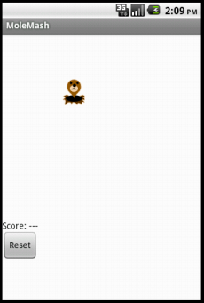
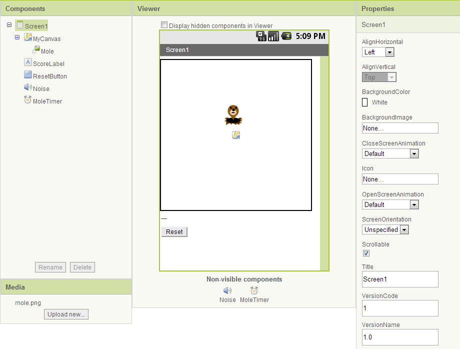
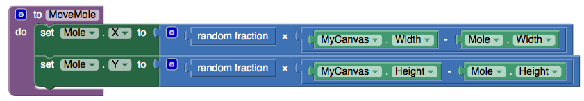
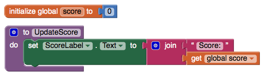
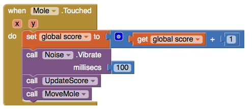
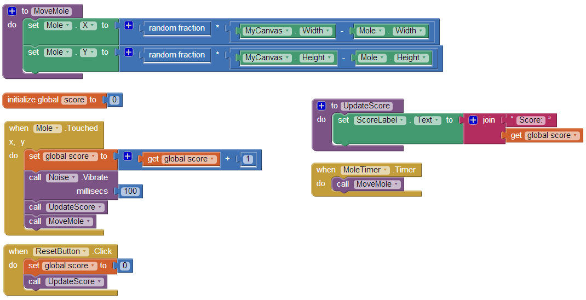

In the game MoleMash, a mole pops up at random positions on a playing field, and the player scores points by hitting the mole before it jumps away. This tutorial shows how to build MoleMash as an example of a simple game that uses animation.
View the NEW book chapter from the App Inventor Book by Wolber, et al. (Includes VIDEO tutorial)
Getting Started
Connect to the App Inventor web site and start a new project. Name it "MoleMash", and also set the screen's Title to "MoleMash". Open the Blocks Editor and connect to the phone.
Also download this picture of a mole and save it on your computer.
{kind=link}
Introduction
You'll design the game so that the mole moves once every half-second. If it is touched, the score increases by one, and the phone vibrates. Pressing restart resets the score to zero.
This tutorial introduces:
- image sprites
- timers and the Clock component
- procedures
- picking random numbers between 0 and 1
- text blocks
- typeblocking
The first components
Several components should be familiar from previous tutorials:
- A Canvas named "MyCanvas". This is the area where the mole moves.
- A Label named "ScoreLabel" that shows the score, i.e., the number of times the player has hit the mole.
- A Button named "ResetButton".
Drag these components from the Palette onto the Viewer and assign their names. Put MyCanvas on top and set its dimensions to 300 pixels wide by 300 pixels high. Set the Text of ScoreLabel to "Score: ---". Set the Text of ResetButton to "Reset". Also add a Sound component and name it "Noise". You'll use Noise to make the phone vibrate when the mole is hit, similar to the way you made the kitty purr in HelloPurr.
Timers and the Clock component
You need to arrange for the mole to jump periodically, and you'll do this with the aid of a Clock component. The Clock component provides various operations dealing with time, like telling you what the date is. Here, you'll use the component as a timer that fires at regular internals. The firing interval is determined by the Clock 's TimerInterval property. Drag out a Clock component; it will go into the non-visible components area. Name it "MoleTimer". Set its TimeInterval to 500 milliseconds to make the mole move every half second. Make sure that TimerEnabled is checked.
Adding an Image Sprite
To add the moving mole we'll use a sprite.
Sprites are images that can move on the screen within a Canvas. Each sprite has a Speed and a Heading, and also an Interval that determines how often the sprite moves at its designated speed. Sprites can also detect when they are touched. In MoleMash, the mole has a speed zero, so it won't move by itself. Instead, you'll be setting the mole's position each time the timer fires. Drag an ImageSprite component onto the Viewer. You'll find this component in the Drawing and Animation category of the Palette. Place it within MyCanvas area. Set these properties for the Mole sprite:
- Picture: Use mole.png, which you downloaded to your computer at the beginning of this tutorial.
- Enabled: checked
- Interval: 500 (The interval doesn't matter here, because the mole's speed is zero: it's not moving by itself.)
- Heading: 0 The heading doesn't matter here either, because the speed is 0.
- Speed: 0.0
- Visible: checked
- Width: Automatic
- Height: Automatic
You should see the x and y properties already filled in. They were determined by where you placed the mole when you dragged it onto MyCanvas. Go ahead and drag the mole some more. You should see x and y change. You should also see the mole on your connected phone, and the mole moving around on the phone as you drag it around in the Designer. You've now specified all the components. The Designer should look like this. Notice how Mole is indented under MyCanvas in the component structure list, indicating that the sprite is a sub-component of the canvas.

Component Behavior and Event Handlers
Now you'll specify the component behavior. This introduces some new App Inventor ideas. The first is the idea of a procedure. For an overview and explanation of procedures, check out the Procedures page.
A procedure is a sequence of statements that you can refer to all at once as single command. If you have a sequence that you need to use more than once in a program, you can define that as a procedure, and then you don't have to repeat the sequence each time you use it. Procedures in App Inventor can take arguments and return values. This tutorial covers only the simplest case: procedures that take no arguments and return no values.
Define Procedures
Define two procedures:
- MoveMole moves the Mole sprite to a new random position on the canvas.
- UpdateScore shows the score, by changing the text of the ScoreLabel
Start with MoveMole:
- In the Blocks Editor, under Built-In, open the Procedures drawer. Drag out a to procedure block and change the label "procedure" to "MoveMole".
Note: There are two similar blocks: procedure then do and procedure then resu;t. Here you should use procedure then do.
The to MoveMole block has a slot labeled "do". That's where you put the statements for the procedure. In this case there will be two statements: one to set the mole's x position and one to set its y position. In each case, you'll set the position to be a random fraction, between 0 and 1, of the difference between the size of the canvas and the size of the mole. You create that value using blocks for random fraction and multiplication and subtraction. You can find these in the Math drawer.
- Build the MoveMole procedure. The completed definition should look like this:

MoveMole does not take any arguments so you don't have to use the mutator function of the procedure block. Observe how the blocks connect together: the first statement uses the Mole.X set block to set mole's horizontal position. The value plugged into the block's socket is the result of multiplying:- The result of the call random fraction block, which a value between 0 and 1
- The result of subtracting the mole's width from the canvas width
The vertical position is handled similarly.
With MoveMole done, the next step is to define a variable called score to hold the score (number of hits) and give it initial value 0. Also define a procedure UpdateScore that shows the score in ScoreLabel. The actual contents to be shown in ScoreLabel will be the text "Score: " joined to the value of score.
- To create the "Score: " part of the label, drag out a text block from the Text drawer. Change the block to read "Score: " rather than " ".
- Use a join block to attach this to a block that gives the value of the score variable. You can find the join block in the Text drawer.
Here's how score and UpdateScore should look:

Add a Timer
The next step is to make the mole keep moving. Here's where you'll use MoleTimer. Clock components have an event handler called when ... Timer that triggers repeatedly at a rate determined by the TimerInterval.
Set up MoleTimer to call MoveMole each time the timer fires, by building the event handler like this:

Notice how the mole starts jumping around on the phone as soon as you define the event handler. This is an example of how things in App Inventor start happening instantaneously, as soon as you define them.
Add a Mole Touch Handler
The program should increment the score each time the mole is touched. Sprites, like canvases, respond to touch events. So create a touch event handler for Mole that:
- Increments the score.
- Calls UpdateScore to show the new score.
- Makes the phone vibrate for 1/10 second (100 milliseconds).
- Calls MoveMole so that the mole moves right away, rather than waiting for the timer.
Here's what this looks like in blocks. Go ahead and assemble the when Mole.Touched blocks as shown.

Here's a tip: You can use typeblocking: typing to quickly create blocks.
- To create a value block containing 100, just type 100 and press return.
- To create a MoveMole block, just type MoveMole and select the block you want from the list
Reset the Score
One final detail is resetting the score. That's simply a matter of making the ResetButton change the score to 0 and calling UpdateScore.
Complete Program
Here's the complete MoleMash program:

Variations
Once you get the game working, you might want to explore some variations. For example:
- Make the game vary the speed of the mole in response to how well the player is doing. To vary how quickly the mole moves, you'll need to change the MoleTimer's Interval property.
- Keep track of when the player hits the mole and when the player misses the mole, and show a score with both hits and misses. To do this, you'll need do define touched handlers both for Mole, same as now, and for MyCanvas. One subtle issue, if the player touches the mole, does that also count as a touch for MyCanvas? The answer is yes. Both touch events will register.
Review
Here are some of the ideas covered in this project:
- Sprites are touch-sensitive shapes that you can program to move around on a Canvas.
- The Clock component can be used as a timer to make events that happen at regular intervals.
- Procedures are defined using to blocks.
- For each procedure you define, App Inventor automatically creates an associated call block and places it in the My Definitions drawer.
- Making a random-fraction block produces a number between 0 and 1.
- Text blocks specify literal text, similar to the way that number blocks specify literal numbers.
- Typeblocking is a way to create blocks quickly, by typing a block's name.
Scan the Sample App to your Phone
Scan the following barcode onto your phone to install and run the sample app.

Download Source Code
If you'd like to work with this sample in App Inventor, download the source code to your computer, then open App Inventor, click Projects, choose Import project (.aia) from my computer..., and select the source code you just downloaded.
Done with MoleMash? Return to the other tutorials here.
Tutorial Version:
Tutorial Difficulty:
- Basic
Tutorial Type:
- Sprites
- Clock Timer
- Game